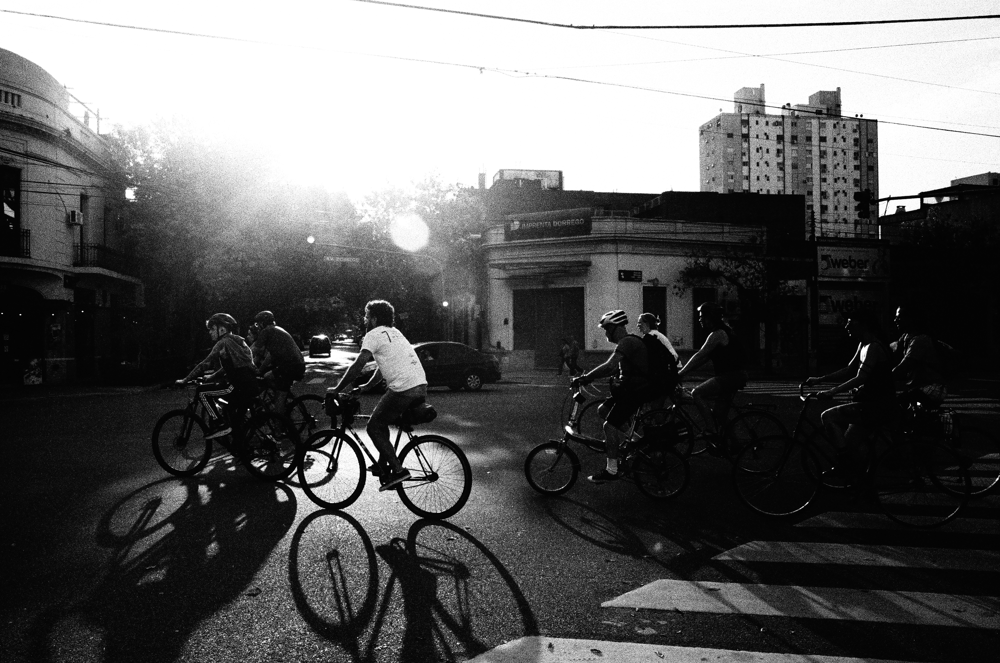
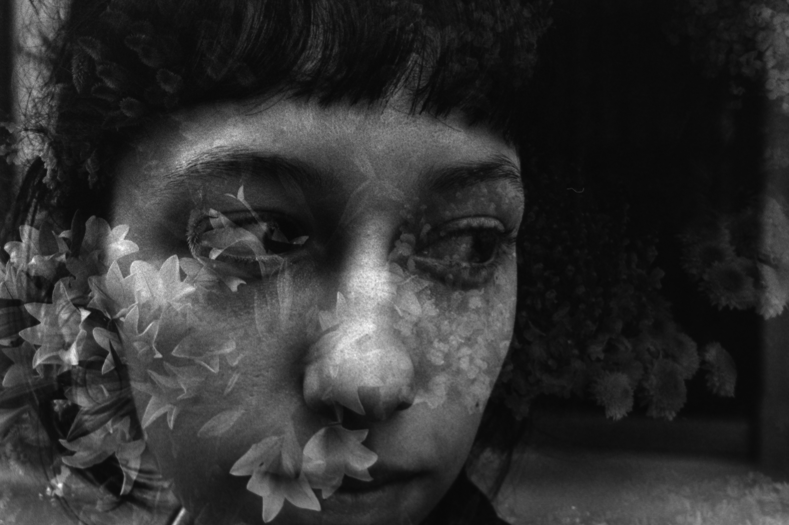

Victor Kutz, 24 anos, é jornalista e fotógrafo. Graduado em Jornalismo pela Faculdade Cásper Líbero, integra, desde 2023,a redação da Revista Cult, onde atua como repórter e editor do site e de redes sociais. Sua produção se concentra em temas como cinema, literatura, música, artes visuais e políticas públicas para a cultura.
Na mesma publicação, também é curador da "Oficina Literária", seção mensal da edição impressa dedicada à publicação de textos inéditos de novos autores e assinou, ao longo de 2025, a coluna "Estante", com resenha mensais de lançamentos do circuito literário.
Na graduação (concluída em 2025), desenvolveu uma pesquisa acadêmica sobre o compositor argentino Astor Piazzolla, sob a ótica da etnomusicologia, relacionando a obra do bandoneonista ao debate político, literário e cultural do país através da obra crítica do escritor Jorge Luis Borges.
Como fotógrafo, se dedica à construção de um portfólio baseado em processos analógicos que transita entre o documental e o experimental. Já fotografou eventos, ensaios em estúdio e retratos para reportagens e perfis.
Além disso, contribui regularmente com festivais e revistas independentes de cinema e tem experiência em assessoria de imprensa, produção de eventos e branded content.
Inglês fluente; espanhol e francês avançados.
Atualmente está aberto a contribuições, freelas e novas experiências nas áreas de cultura, jornalismo e fotografia.




